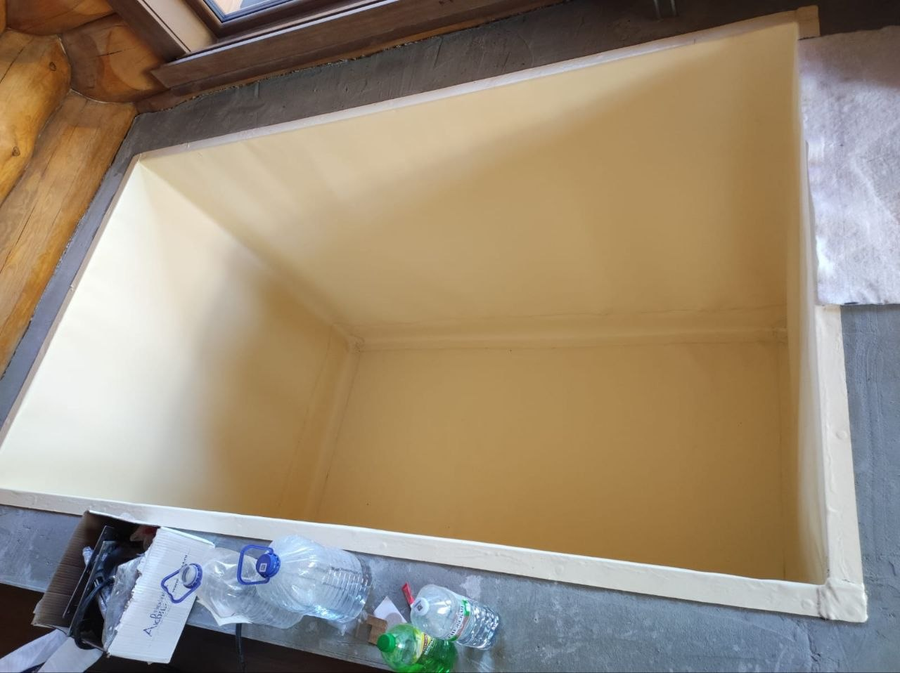

Введение
Плёнка ПВХ для бассейна: плюсы, минусы и срок службы
Плёнка ПВХ — одно из самых распространённых решений для отделки частных и коммерческих бассейнов. Её выбирают за относительную простоту монтажа, герметичность и предсказуемую стоимость реализации. Но за кажущейся простотой скрывается инженерная система, где важны не только материалы, но и качество подготовки основания и соблюдение технологии.
Бассейн с ПВХ-плёнкой нельзя рассматривать отдельно от конструкции чаши и инженерии. На итоговую надёжность влияют гидроизоляция основания, качество бетона, корректная фильтрация воды, а также правильно подобранное оборудование и режим эксплуатации.
Ошибки на этапе проектирования или монтажа часто приводят к сокращению срока службы покрытия, появлению складок, протечек или потере герметичности. Поэтому выбор плёнки всегда должен рассматриваться в контексте всей системы бассейна, а не как самостоятельное декоративное решение.
В этой статье разберём, какие преимущества даёт ПВХ-плёнка, какие у неё ограничения, каков реальный срок службы и в каких случаях она становится оптимальным выбором для частного дома или коммерческого объекта.
Для комплексного понимания темы изучите также материалы: бетонная чаша, стоимость бассейна, проектирование, обслуживание бассейна, гидроизоляция и выбор концепции перелив/скиммер.

Инженерия
Техническая часть и эксплуатация ПВХ-плёнки в бассейне
Плёнка ПВХ в бассейне — это не просто отделочный материал, а функциональный гидроизоляционный слой, который напрямую влияет на герметичность чаши и стабильность всей системы. Её долговечность и внешний вид зависят не только от качества самой плёнки, но и от того, насколько правильно подготовлена основа и настроена инженерия бассейна.
В корректно спроектированной системе ПВХ-плёнка работает как часть единого инженерного решения: она взаимодействует с бетонной чашей, системой фильтрации, гидравликой и химической обработкой воды. Любое нарушение баланса — от неправильной циркуляции до ошибок в химии — сокращает срок службы покрытия.
Ключевое значение имеет подготовка основания: геометрия чаши, качество выравнивания, отсутствие острых кромок и правильная установка закладных элементов. Даже небольшие дефекты основания со временем проявляются в виде складок, натяжений или локальных повреждений плёнки.
Эксплуатационная часть также критична: стабильный pH воды, корректная работа фильтрации и отсутствие перегрузки химией позволяют сохранить эластичность материала и его внешний вид на протяжении всего срока службы.
Важно понимать, что ПВХ-плёнка — это управляемое и ремонтопригодное решение, но его ресурс напрямую зависит от инженерного подхода. При правильном проектировании и обслуживании бассейн остаётся герметичным, безопасным и предсказуемым в эксплуатации на протяжении многих лет.
Смета и бюджет
Как считать стоимость ПВХ-плёнки и где возникают риски
Стоимость бассейна с ПВХ-плёнкой формируется не только за счёт самого материала. На итоговый бюджет влияет вся инженерная система: чаша, подготовка основания, оборудование, режим эксплуатации и качество монтажа. Ошибка в любом из этих блоков может привести к дополнительным расходам уже после запуска.
Чтобы понимать реальную стоимость владения, важно рассматривать проект целиком — от строительной части до ежедневной эксплуатации и обслуживания.
| Позиция | Что влияет на цену | Где возникают риски |
|---|---|---|
| Строительство бассейна | Геометрия чаши, грунты, доступ техники, качество подготовки основания | Трещины основания, сложность монтажа плёнки, переделки гидроизоляции |
| Оборудование бассейна | Мощность фильтрации, насосы, подогрев и режим работы | Перегрузка системы или недостаточная очистка воды |
| Автоматизация | Дозирование химии, контроль параметров, удалённое управление | Нестабильная химия воды и повышенные затраты на обслуживание |
| Отделка (ПВХ-плёнка) | Качество материала, технология укладки, температурный режим монтажа | Складки, потеря герметичности, сокращение срока службы покрытия |
Такой подход позволяет заранее увидеть не только стоимость строительства, но и будущие эксплуатационные расходы. Это особенно важно для ПВХ-плёнки, где долговечность напрямую зависит от качества монтажа и стабильности инженерной системы.
-
01
Собрать исходные данные
Учитываются архитектура участка, тип чаши, грунты, режим эксплуатации бассейна и требования к внешнему виду. Это база, от которой зависит корректность всех дальнейших решений.
-
02
Согласовать спецификацию
Подбирается оборудование, система фильтрации, подогрев и химическая обработка воды с учётом реальной нагрузки и сценария использования бассейна.
-
03
Утвердить календарный план
Проект разбивается на этапы с контрольными точками качества. Это позволяет контролировать монтаж ПВХ-плёнки и исключить ошибки на скрытых стадиях работ.
В результате стоимость становится прогнозируемой, а система — управляемой. При правильном подходе ПВХ-плёнка работает стабильно, сохраняет герметичность и не требует постоянных вмешательств в процессе эксплуатации.
Практика показывает, что долговечность и внешний вид ПВХ-плёнки в бассейне зависят не от самого материала, а от того, насколько точно выстроена вся система в целом. Если проектирование, подготовка чаши, монтаж плёнки, оборудование и эксплуатация согласованы между собой — бассейн работает стабильно и предсказуемо.
В такой системе каждая часть влияет на результат: от качества бетона и гидроизоляции до работы фильтрации, химической обработки воды и регулярного обслуживания. Нарушение хотя бы одного этапа почти всегда приводит к ускоренному износу покрытия и дополнительным расходам.
Грамотный инженерный подход к ПВХ-плёнке — это не только выбор материала, но и прозрачная смета, понятная логика эксплуатации и заранее определённый регламент обслуживания. Владелец понимает, как система работает, сколько она стоит в обслуживании и какие параметры влияют на срок службы покрытия.
Для собственника это означает отсутствие неожиданных затрат в первые годы эксплуатации, стабильное качество воды и предсказуемое поведение всей системы без постоянных корректировок и внеплановых ремонтов.
Ошибки клиентов
Чего важно избегать при установке ПВХ-плёнки в бассейне
ПВХ-плёнка кажется простым и удобным решением, но на практике её срок службы и внешний вид напрямую зависят от качества подготовки и инженерных решений. Большинство проблем возникает не из-за материала, а из-за ошибок на этапе проекта и монтажа.
-
Экономия на скрытых узлах — гидроизоляция, закладные элементы и обвязка. Именно эти зоны отвечают за герметичность системы. Ошибки здесь невозможно исправить без серьёзного демонтажа.
-
Отсутствие полноценного проекта. Монтаж «по месту» без рабочей документации приводит к неточностям в геометрии чаши, проблемам с натяжением плёнки и сложностям при обслуживании.
-
Неправильный расчёт технического помещения и вентиляции. Перегрев оборудования, высокая влажность и неудобный доступ к узлам сокращают срок службы системы и усложняют эксплуатацию.
-
Покупка оборудования без гидравлического расчёта. Несбалансированная система фильтрации приводит либо к плохому качеству воды, либо к избыточным затратам на электроэнергию и обслуживание.
Правильный подход к ПВХ-плёнке начинается не с выбора материала, а с проектирования всей системы. Чем точнее инженерия на старте, тем стабильнее работа бассейна и ниже расходы в эксплуатации.
FAQ
Частые вопросы о ПВХ-плёнке для бассейна
Ниже — практические ответы на ключевые вопросы, которые помогают заранее понять сроки, бюджет и реальные требования к эксплуатации бассейна с ПВХ-плёнкой.
Сколько занимает реализация под ключ?
В среднем проект занимает от 3 до 6 месяцев. Срок зависит от готовности строительной стадии объекта, сложности инженерных решений и выбранного уровня отделки. Чем раньше согласован проект, тем меньше задержек и переделок на этапе монтажа плёнки.
Можно ли снизить бюджет без риска для качества?
Да, но только за счёт оптимизации отделки, декоративных решений и уровня автоматизации. Экономия на гидроизоляции, подготовке чаши и фильтрации недопустима — именно эти элементы определяют герметичность и срок службы ПВХ-плёнки.
Какие документы входят в проектирование?
В проект входят: пояснительная записка, рабочие чертежи чаши, гидравлические схемы, спецификация оборудования и регламент обслуживания. Это позволяет заранее исключить ошибки и обеспечить корректный монтаж плёнки без импровизаций.
Нужно ли регулярное обслуживание?
Да. Регулярное обслуживание необходимо для сохранения качества воды, защиты ПВХ-плёнки и продления срока службы оборудования. Без регламента система быстрее теряет баланс и требует дорогостоящего восстановления.
Когда лучше заказывать расчёт стоимости?
Оптимально — до начала строительных работ или на этапе проектирования дома. Это позволяет заранее заложить правильную геометрию чаши, техническое помещение и инженерные узлы без последующих переделок.
CTA
Запросить коммерческое предложение
Подготовим смету, подберем оборудование и предложим реалистичный план строительства бассейна под ключ.